第 5 章 Logistic回归#
本章解决：怎么用一条"最佳拟合直线"做二分类——把每个特征乘上回归系数求和，代入 Sigmoid 函数压到 0~1 之间，大于 0.5 判 1 类、小于 0.5 判 0 类；而找最佳回归系数这件事，交给最优化算法（梯度上升、随机梯度上升）来解决。 承上启下：与第 4 章朴素贝叶斯同属概率分类，但这里不再建模生成过程，而是直接拟合判别边界；本章还是全书第一次接触最优化算法——这条"迭代更新参数"的路线贯穿后面所有章节；5.3 节的病马数据集第 7 章会再次登场，第 8 章起才会系统展开"回归"本身。
这会是激动人心的一章，因为我们将首次接触到最优化算法（optimization algorithm）。日常生活中其实到处是最优化问题：如何在最短时间内从 A 点到达 B 点？如何投入最少工作量却获得最大效益？如何设计发动机使得油耗最少而功率最大？本章介绍几个最优化算法，并利用它们训练出一个非线性函数用于分类。
不熟悉回归也没关系（第 8 章起会深入介绍）。假设现在有一些数据点，用一条直线对这些点进行拟合（该线称为最佳拟合直线），这个拟合过程就称作回归（regression）。利用 Logistic 回归进行分类的主要思想：根据现有数据对分类边界线建立回归公式，以此进行分类。这里的"回归"一词源于最佳拟合，表示要找到最佳拟合参数集。训练分类器时的做法就是寻找最佳拟合参数，使用的是最优化算法。
Logistic 回归的一般过程（训练占去大部分时间，训练完成后分类非常快）：
flowchart LR
A["① 收集数据<br/>任意方法"] --> B["② 准备数据<br/>数值型 · 结构化最佳"]
B --> C["③ 分析数据<br/>任意方法"]
C --> D["④ 训练算法<br/>找最佳回归系数"]
D --> E["⑤ 测试算法<br/>训练完成分类很快"]
E --> F["⑥ 使用算法<br/>回归计算判类别"]5.0 本章导图#
5.1 基于Logistic回归和Sigmoid函数的分类#
原书优缺点表
| Logistic 回归 | |
|---|---|
| 优点 | 计算代价不高，易于理解和实现 |
| 缺点 | 容易欠拟合，分类精度可能不高 |
| 适用数据类型 | 数值型和标称型数据 |
我们想要的函数应该是：能接受所有的输入然后预测出类别。例如两个类的情况下，函数输出 0 或 1。具有这种性质的函数你或许见过，它叫海维塞德阶跃函数（Heaviside step function），或者直接称单位阶跃函数（unit step function）。然而阶跃函数的问题在于：它在跳跃点上从 0 瞬间跳跃到 1，这个瞬间跳跃过程有时很难处理。
幸好，另一个函数也具有类似的性质（能输出 0 或 1），且数学上更易处理——这就是 Sigmoid 函数，具体的计算公式如下：
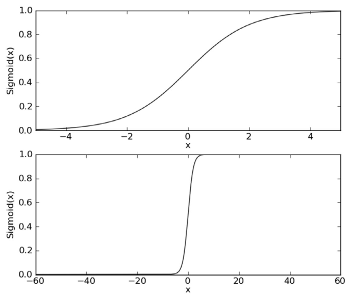
同一件事用代码实跑一遍更直观（虚线是 0.5 的分界线）：
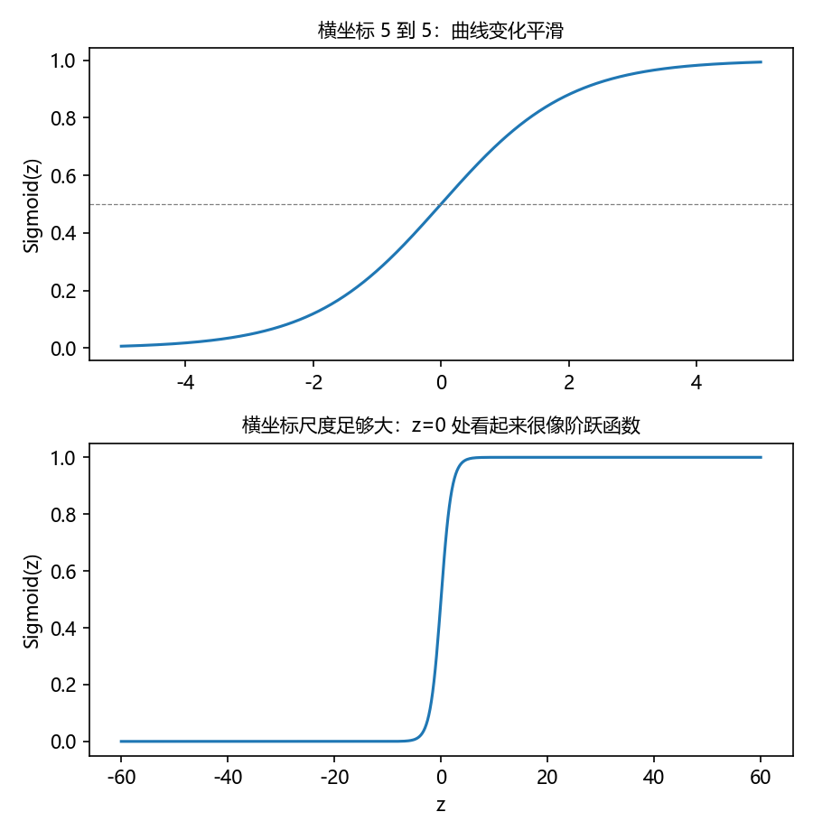
从图上看：当 \(z = 0\) 时，Sigmoid 函数值为 0.5；随着 \(z\) 增大，对应的 Sigmoid 值将逼近于 1；随着 \(z\) 减小，Sigmoid 值将逼近于 0。如果横坐标刻度足够大（图 5-1 下图），Sigmoid 函数看起来就很像一个阶跃函数。
拓展：Sigmoid 的来历与好性质
Sigmoid 函数是 Logistic 分布的累积分布函数，名字来自形状像字母 S（sigmoid 意为"S 形的"）。它在数学上处处连续、处处可微，这正是阶跃函数做不到的。它有一个非常好用的一阶导数：
即导数可以用函数值本身表达，后面推导梯度时全靠这一条（见 5.2.2 的拓展推导）。另外注意原书译者注：数学中，若实数域上的某函数可以用半开区间上**指示函数（indicator function）**的有限次线性组合表示，它就是阶跃函数——Sigmoid 只是"长得像"，并不属于阶跃函数一族。
确定了分类器的函数形式，实现 Logistic 回归分类器的做法是：在每个特征上都乘一个回归系数，把所有结果值相加，将总和代入 Sigmoid 函数，进而得到一个范围在 0~1 之间的数值。任何大于 0.5 的数据被分入 1 类，小于 0.5 即归入 0 类。所以 Logistic 回归也可以被看成一种概率估计。
拓展：明明是分类，为什么叫'回归'
本书将 weight 译作"回归系数"，是为了与第 8 章局部加权线性回归中的"权重"一词区分，不会引起混淆时也简称"系数"。这个方法更学术的名字叫对数几率回归（logit regression）：它先按线性回归的方式算出 \(z = w^{T}x\)，再用 Sigmoid 把 \(z\) 映射成"属于类别 1 的概率"——本质上是对"是/否"这类二值结果做回归，最后再按 0.5 的门槛切成两类。"输出的是概率"这个视角很重要：它让 Logistic 回归能给出置信程度，也是从分类走向"预测数值"（第 8 章）的天然过渡。
现在的问题变成了：**最佳回归系数是多少？如何确定它们的大小？**下一节解答。
5.2 基于最优化方法的最佳回归系数确定#
Sigmoid 函数的输入记为 \(z\)，由下面公式得出：
如果采用向量的写法，上述公式可以写成 \(z = w^{T}x\)——将两个数值向量对应元素相乘然后全部加起来即得到 \(z\) 值。向量 \(x\) 是分类器的输入数据，向量 \(w\) 就是我们要找的最佳参数（系数），它使得分类器尽可能精确。为了寻找该最佳参数，需要用到最优化理论的一些知识。
本节路线：先介绍梯度上升法并求得数据集的最佳参数 → 展示如何绘制决策边界图把分类效果可视化 → 最后学习随机梯度上升算法以及如何改进它。
5.2.1 梯度上升法#
第一个最优化算法叫梯度上升法（gradient ascent）。它基于的思想：要找到某函数的最大值，最好的方法是沿着该函数的梯度方向探寻。如果梯度记为 ∇，则函数 \(f(x, y)\) 的梯度由下式表示：
这是机器学习中最容易造成混淆的地方之一，但数学上并不难，需要做的只是牢记符号的意义：这个梯度意味着要沿 x 的方向移动 \(\dfrac{\partial f(x,y)}{\partial x}\)，沿 y 的方向移动 \(\dfrac{\partial f(x,y)}{\partial y}\)。其中函数 \(f(x, y)\) 必须要在待计算的点上有定义并且可微。
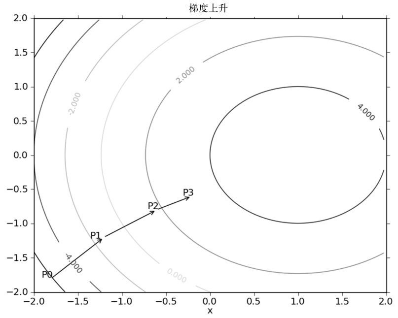
梯度算子总是指向函数值增长最快的方向——这里说的是移动方向，没提移动量的大小。该量值称为步长（step size），记作 \(\alpha\)。用向量表示的话，梯度上升算法的迭代公式如下：
该公式将一直被迭代执行，直至达到某个停止条件为止，比如迭代次数达到某个指定值，或算法达到某个允许的误差范围。
拓展：为什么沿梯度方向'上升最快'
用一阶泰勒展开看：在当前点 \(w\) 附近，\(f(w + \Delta w) \approx f(w) + \nabla f(w)^{T}\Delta w\)。固定步长 \(\lVert \Delta w \rVert\) 时，要让增量 \(\nabla f^{T}\Delta w\) 最大，\(\Delta w\) 必须与梯度同方向（夹角 0°，余弦最大）。所以"沿梯度走"不是经验法则，是数学结论。同理，若步长 \(\alpha\) 取得过大，一阶近似失效，点会在谷两侧来回弹甚至发散——这就是"步长要当超参数调"的原因。
侧栏：梯度下降算法
你最经常听到的应该是梯度下降（gradient descent），它与梯度上升一模一样，只是公式中的加法变成减法：
**梯度上升用来求函数的最大值，梯度下降用来求函数的最小值。**同一个算法换个符号，把"爬山"变成"下山"。
5.2.2 训练算法：使用梯度上升找到最佳参数#
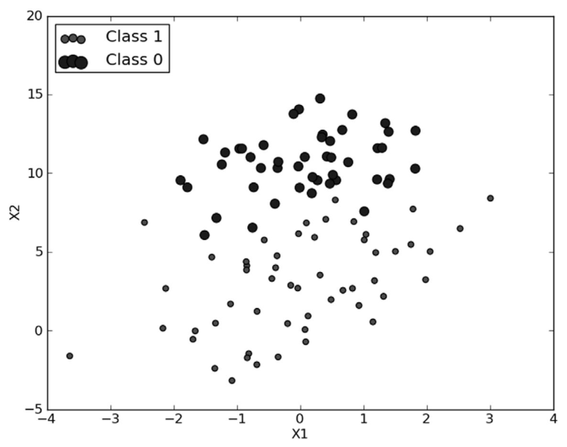
在此数据集上，我们将用梯度上升法找到最佳回归系数——也就是拟合出 Logistic 回归模型的最佳参数。梯度上升法的伪代码如下：
下面的代码是梯度上升算法的具体实现。打开文本编辑器，创建一个名为 logRegres.py 的文件，输入下列代码（原书 Python 2 已改写为 Python 3 可直接运行）：
# ===== 书 5.2.2 节 程序清单5-1：Logistic回归梯度上升优化算法 =====
from numpy import *
def loadDataSet():
dataMat = []; labelMat = [] # 特征矩阵、类别标签列表
fr = open('testSet.txt') # 逐行读取文本文件
for line in fr.readlines():
lineArr = line.strip().split() # 每行前两个值是 X1、X2，第三个是类别标签
dataMat.append([1.0, float(lineArr[0]), float(lineArr[1])]) # X0 恒置 1.0
labelMat.append(int(lineArr[2]))
return dataMat, labelMat
def sigmoid(inX):
return 1.0 / (1 + exp(-inX)) # Sigmoid：接受任意实数，输出 0~1
def gradAscent(dataMatIn, classLabels):
dataMatrix = asmatrix(dataMatIn) # 转换为 NumPy 矩阵（原书用 mat()，见下框勘误）
labelMat = asmatrix(classLabels).transpose() # 1×100 行向量转置成 100×1 列向量
m, n = shape(dataMatrix) # m=100 个样本，n=3 个特征（含 X0）
alpha = 0.001 # 向目标移动的步长
maxCycles = 500 # 迭代次数
weights = ones((n, 1)) # 每个回归系数初始化为 1（3×1 列向量）
for k in range(maxCycles): # 重复 R 次（这里 R = 500）
h = sigmoid(dataMatrix * weights) # 矩阵相乘：100×3 · 3×1 = 100×1 列向量
error = (labelMat - h) # 真实类别与预测类别的差值（100×1）
weights = weights + alpha * dataMatrix.transpose() * error # 按梯度更新回归系数
return weights
环境适配：numpy 2.x 已移除 mat()
原书代码写作 mat(dataMatIn)（from numpy import * 下的 NumPy 矩阵转换函数）。NumPy 2.0 起该函数别名已被移除，笔记改用等价的 asmatrix()。注意 matrix 矩阵类型本身目前仍可用，但官方早已不推荐——新代码更建议全程用 ndarray（本书第 9 章起的代码就是这样做的）。
代码开头提供了便利函数 loadDataSet()，功能是打开文本文件 testSet.txt 并逐行读取：每行前两个值分别是 X1 和 X2，第三个值是数据对应的类别标签；为方便计算，函数还把 X0 的值设为 1.0。接下来的函数就是 5.2 节提到的 sigmoid()。
梯度上升的实际工作在 gradAscent() 里完成，它有两个参数：
- dataMatIn：一个 2 维 NumPy 数组，每列代表一个不同的特征，每行代表一个训练样本。现在用的 100 个样本的简单数据集，包含两个特征 X1、X2，再加上第 0 维特征 X0，所以 dataMatIn 里存放的是 100×3 的矩阵；
- classLabels：类别标签，是一个 1×100 的行向量。为便于矩阵运算，需要将该行向量转置成列向量再赋给 labelMat。
这是本书首次使用 NumPy 矩阵——如果你对矩阵数学不太熟悉，一些运算会不易理解。NumPy 对 2 维数组和矩阵都提供操作支持，如果混淆了数据类型和对应的操作，执行结果将与预期截然不同（本书附录 A 给出了 NumPy 矩阵的介绍）。变量 alpha 是向目标移动的步长，maxCycles 是迭代次数。for 循环迭代完成后，返回训练好的回归系数。
需要强调的是 h = sigmoid(dataMatrix * weights) 是矩阵运算：变量 h 不是一个数，而是一个列向量，元素个数等于样本个数（这里是 100）。对应地，运算 dataMatrix * weights 代表的不止一次乘积——事实上该运算包含了 300 次乘积（100 个样本 × 3 个特征）。
至于 error = (labelMat - h) 与更新式为什么长那样，原书略去了推导、留给有兴趣的读者。定性地说：这是在计算真实类别与预测类别的差值，接下来按该差值的方向调整回归系数。
拓展：把书中'留给读者'的推导补上——更新公式就是对数似然的梯度
把 \(h_i = \sigma(w^{T}x_i)\) 看成样本 \(x_i\) 属于类别 1 的概率，一次看到全部样本的对数似然为：
对 \(w\) 求导（利用 \(\sigma' = \sigma(1-\sigma)\) 化简），可以推出：
右边恰好就是代码里的 dataMatrix.transpose() * error（\(y\) 对应 labelMat，\(h\) 是预测值）。所以这五行循环代码并不是"拍脑袋的启发式"——梯度上升法在最大化对数似然，更新公式严格就是它的梯度乘步长。这也解释了为什么误差项只取 \(y - h\) 这么简单。
实际效果如何？在 Python 提示符下敲入下面的代码（实跑输出与原书逐位一致——梯度上升是确定性算法）：
>>> import logRegres
>>> from numpy import *
>>> dataArr, labelMat = logRegres.loadDataSet()
>>> logRegres.gradAscent(dataArr, labelMat)
matrix([[ 4.12414349],
[ 0.48007329],
[-0.6168482 ]])
原书 Python 2 的 reload 去哪了
原书每次修改 logRegres.py 后都会敲 reload(logRegres) 刷新模块——reload 是 Python 2 的内置函数。Python 3 中它搬进了标准库：from importlib import reload。若按本笔记的方式在脚本 / Jupyter 中开发，重跑一遍单元格即可，不必 reload。
5.2.3 分析数据：画出决策边界#
上面已经解出了一组回归系数，它确定了不同类别数据之间的分隔线。怎样画出该分隔线，让优化过程便于理解？打开 logRegres.py 并添加如下代码：
# ===== 书 5.2.3 节 程序清单5-2：画出数据集和 Logistic回归最佳拟合直线 =====
import matplotlib.pyplot as plt
def plotBestFit(weights):
dataMat, labelMat = loadDataSet() # 重新取一遍数据用于画散点
dataArr = array(dataMat) # 转成数组，便于按行列取值
n = shape(dataArr)[0] # 样本个数
xcord1 = []; ycord1 = [] # 类别 1 的 X1、X2 坐标
xcord2 = []; ycord2 = [] # 类别 0 的 X1、X2 坐标
for i in range(n):
if int(labelMat[i]) == 1:
xcord1.append(dataArr[i, 1]); ycord1.append(dataArr[i, 2])
else:
xcord2.append(dataArr[i, 1]); ycord2.append(dataArr[i, 2])
fig = plt.figure()
ax = fig.add_subplot(111)
ax.scatter(xcord1, ycord1, s=30, c='red', marker='s') # 类别 1：红色方块
ax.scatter(xcord2, ycord2, s=30, c='green') # 类别 0：绿色圆点
x = arange(-3.0, 3.0, 0.1)
y = (-weights[0] - weights[1] * x) / weights[2] # 令 Sigmoid 输入为 0 解出的直线
ax.plot(x, y) # 最佳拟合直线
plt.xlabel('X1'); plt.ylabel('X2')
plt.show()
程序清单 5-2 的代码直接用 Matplotlib 画出来。唯一要指出的是 y = (-weights[0] - weights[1] * x) / weights[2] 这一行：它设置了 Sigmoid 函数的输入为 0。回忆 5.2 节——0 是两个类别（类别 1 和类别 0）的分界处。因此我们设定：
然后解出 X2 和 X1 的关系式（即分隔线的方程，注意 X0 = 1）：\(x_2 = \dfrac{-w_0 - w_1 x_1}{w_2}\)。
运行程序清单 5-2 的代码，在 Python 提示符下输入：
>>> weights = logRegres.gradAscent(dataArr, labelMat)
>>> logRegres.plotBestFit(weights.getA()) # getA()：把 matrix 转回 ndarray 再传入
输出的结果如图 5-4 所示。
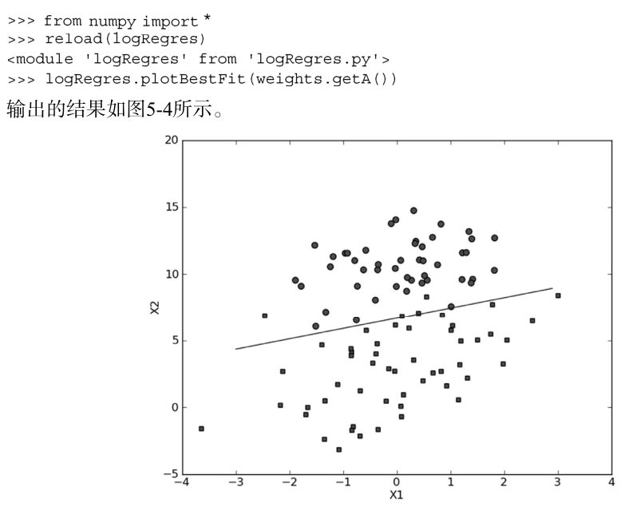
同样的数据、同样的系数，用本笔记实跑代码重画一遍（可与书图对照）：
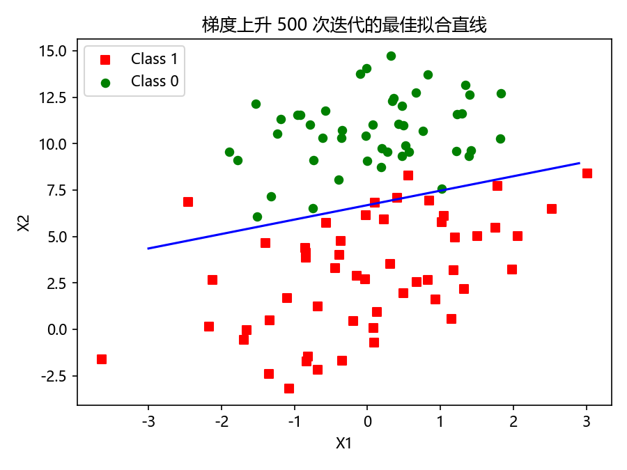
这个分类结果相当不错——从图上看只错分了两到四个点（用实跑系数逐点核对：错分 4 个 / 100 个，与书一致）。但是，尽管例子简单且数据集很小，这个方法却需要大量的计算（每次迭代的 dataMatrix * weights 就含 300 次乘法，还要乘以 500 次迭代）。因此下一节将对该算法稍作改进，使它可以用在真实数据集上。
关于 weights.getA()
plotBestFit 里画直线用到了 weights[0]、weights[1]、weights[2] 的逐元素运算，所以传参前先用 getA() 把 3×1 的 matrix 转成 ndarray（实跑确认：numpy 2.2.6 下 getA() 仍可用，返回 shape 为 (3, 1) 的 ndarray）。矩阵类型整体已在弃用路上，若哪天 NumPy 移除它，等价写法是 np.asarray(weights)——顺手把整个 gradAscent 改成 ndarray 实现是更彻底的方案。
5.2.4 训练算法：随机梯度上升#
梯度上升算法在每次更新回归系数时都需要遍历整个数据集——处理 100 个左右的数据集时尚可，如果有数十亿样本和成千上万的特征，计算复杂度就太高了。一种改进方法：一次仅用一个样本点来更新回归系数，该方法称为随机梯度上升算法（stochastic gradient ascent）。由于可以在新样本到来时对分类器进行增量式（incremental）更新，随机梯度上升是一个在线学习（online learning）算法。与"在线学习"相对应，一次处理所有数据被称作"批处理（batch processing）"。
拓展：随机梯度 vs 批梯度，以及 mini-batch
本书这一对算法就是深度学习时代 SGD（随机梯度下降）与全量批梯度的原型：批梯度方向准但贵，随机梯度便宜但方向抖。现代实践常用的折中是 mini-batch——每次用一小撮（如 32、256 个）样本算梯度，兼得稳定与效率；这个思想在神经网络部分会反复出现。
随机梯度上升算法可以写成如下的伪代码：
以下是随机梯度上升算法的实现代码：
# ===== 书 5.2.4 节 程序清单5-3：随机梯度上升 =====
def stocGradAscent0(dataMatrix, classLabels):
m, n = shape(dataMatrix)
alpha = 0.01 # 固定步长（比梯度上升的 0.001 大一个量级）
weights = ones(n) # 一维数组：全程没有矩阵转换过程
for i in range(m): # 每次只用第 i 个样本更新系数
h = sigmoid(sum(dataMatrix[i] * weights)) # h 是数值，不是列向量
error = classLabels[i] - h # error 也是数值
weights = weights + alpha * error * dataMatrix[i]
return weights
可以看到，随机梯度上升与梯度上升在代码上很相似，但有两个区别：
- 后者的变量 h 和误差 error 都是向量，前者则全是数值；
- 前者没有矩阵的转换过程，所有变量的数据类型都是 NumPy 数组。
在 Python 提示符下验证该方法（单轮遍历是确定性的，任何人跑都得到同一组数）：
>>> dataArr, labelMat = loadDataSet()
>>> weights = stocGradAscent0(array(dataArr), labelMat)
>>> weights
array([ 1.01702007, 0.85914348, -0.36579921])
>>> plotBestFit(weights)
执行完毕后将得到图 5-5 所示的最佳拟合直线图，与图 5-4 有一些相似之处——拟合出来的直线效果还不错，但并不像图 5-4 那样完美。这里的分类器错分了三分之一的样本（用该组系数逐点核对实跑：错分 28 / 100，恰约三分之一）。
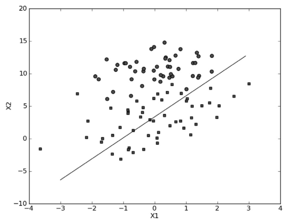
直接比较程序清单 5-3 和程序清单 5-1 的结果是不公平的：后者的结果是在整个数据集上迭代了 500 次才得到的。一个判断优化算法优劣的可靠方法是看它是否收敛——参数是否达到了稳定值？是否还在不断地变化？对此，我们在程序清单 5-3 的随机梯度上升算法上做了些修改（外面加一层循环），使其在整个数据集上运行 200 次，最终绘制的三个回归系数的变化情况如图 5-6 所示。
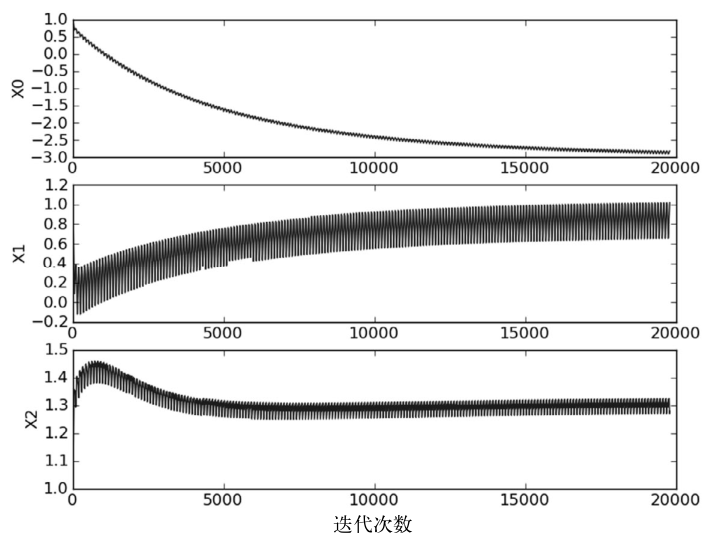
图 5-6 展示了 200 次遍历中回归系数的变化情况。其中的系数 2（即 X2 对应的 w2）只经过了 50 次迭代就达到了稳定值，但系数 1 和 0 则需要更多次的迭代。另外值得注意的是：在大波动停止后还有一些小的周期性波动。不难理解其原因——数据集中存在一些不能正确分类的样本点（数据集并非线性可分），每次迭代时会引发系数的剧烈改变。我们期望算法能避免来回波动，从而收敛到某个值；另外，收敛速度也需要加快。
对于图 5-6 存在的问题，可以通过修改程序清单 5-3 的随机梯度上升算法来解决：
# ===== 书 5.2.4 节 程序清单5-4：改进的随机梯度上升 =====
def stocGradAscent1(dataMatrix, classLabels, numIter=150):
m, n = shape(dataMatrix)
weights = ones(n)
for j in range(numIter): # 迭代次数默认 150，可由第 3 个参数修改
dataIndex = list(range(m)) # Python 3 改写：range 需转 list 才能 del 元素
for i in range(m):
alpha = 4 / (1.0 + j + i) + 0.0001 # 改进①：alpha 随迭代减小，但常数项保底不为 0
randIndex = int(random.uniform(0, len(dataIndex))) # 改进②：随机选取样本来更新
h = sigmoid(sum(dataMatrix[randIndex] * weights))
error = classLabels[randIndex] - h
weights = weights + alpha * error * dataMatrix[randIndex]
del(dataIndex[randIndex]) # 用过即删，本轮不再重复抽取
return weights
程序清单 5-4 与程序清单 5-3 类似，但增加了两处改进。
第一处改进：alpha 每次迭代时需要调整。一方面，alpha 在每次迭代都会调整，这会缓解图 5-6 上的数据波动或高频波动；另一方面，虽然 alpha 随迭代次数不断减小，但永远不会减小到 0——因为式中还存在常数项 0.0001。必须这样做的原因：保证多次迭代之后新数据仍然具有一定的影响。如果要处理的问题是动态变化的，可以适当加大这个常数项，确保新值获得更大的回归系数。另一点值得注意：在降低 alpha 的函数中，alpha 每次减少 \(1/(j+i)\)，其中 j 是迭代次数、i 是样本点的下标。这样当 j ≪ max(i) 时，alpha 就不是严格下降的——避免参数严格下降也常见于模拟退火等其他优化算法中。
原书译者注：区分两种'下标'
要注意区分这里的下标与样本编号：编号表示样本在矩阵中的位置（代码中为 randIndex），而下标 i 表示本次迭代中第 i 个被选出来的样本。同一个样本可能被选中多次，也有些样本一次都选不中——这正是"随机"的含义。
拓展：这种步长有名字
\(\alpha = 4/(1+j+i) + 0.0001\) 属于随迭代衰减的学习率。随机逼近理论（Robbins–Monro 条件）要求：要让随机迭代收敛，学习率需满足 \(\sum_t \alpha_t = \infty\)（衰减够慢，能跑遍整个空间）且 \(\sum_t \alpha_t^2 < \infty\)（衰减够快，能压住随机噪声）。\(1/t\) 型衰减恰好两条都满足；常数项 0.0001 严格来说会破坏第二条，但换来的是"永远对新数据保留响应"，工程上利大于弊。
第二处改进：随机选取样本来更新回归系数。这将减少周期性的波动（如图 5-6 中的波动）。具体实现方法与第 3 章类似：每次随机从列表中选出一个值，然后从列表中删掉该值（再进行下一次迭代）。此外，改进算法还增加了迭代次数作为第 3 个参数：如果该参数没有给定，算法将默认迭代 150 次；如果给定，则按新参数值迭代。
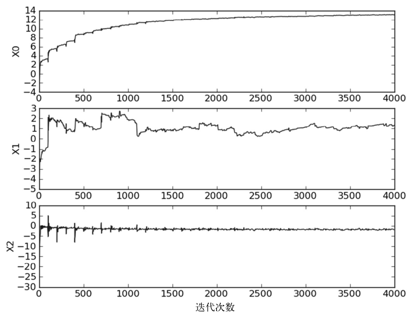
原书图文不一致
原书正文说图 5-7 "仅仅对数据集做了 20 次遍历"，但其图 5-7 的横轴刻度到 4000——按 100 个样本算这是 40 遍的样本更新次数。两者对不上，属于原书图文不一致；不影响结论："改进后比固定 alpha 的方法收敛得更快"。
比较图 5-7 和图 5-6 可以看到两点不同：
- 图 5-7 中的系数没有像图 5-6 里那样出现周期性的波动，这归功于
stocGradAscent1()里的样本随机选择机制； - 图 5-7 的水平轴短了很多——
stocGradAscent1()收敛得更快。
把两个算法的系数波动放进同一张图对比（上排固定 alpha、下排改进算法），收敛差异一目了然：
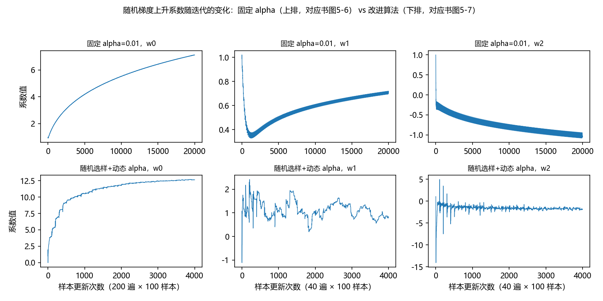
下面看看在同一个数据集上的分类效果。在 Python 提示符下输入：
>>> dataArr, labelMat = loadDataSet()
>>> weights = stocGradAscent1(array(dataArr), labelMat)
>>> weights
array([ 13.26138553, 1.0828908 , -1.93671426]) # 随机算法：每次结果都不同
>>> plotBestFit(weights)
>>> stocGradAscent1(array(dataArr), labelMat, 500) # 默认 150 次，可改成 500 次
程序运行之后应该能看到类似图 5-8 的结果图。该分隔线达到了与 gradAscent() 差不多的效果，但所使用的计算量更少。
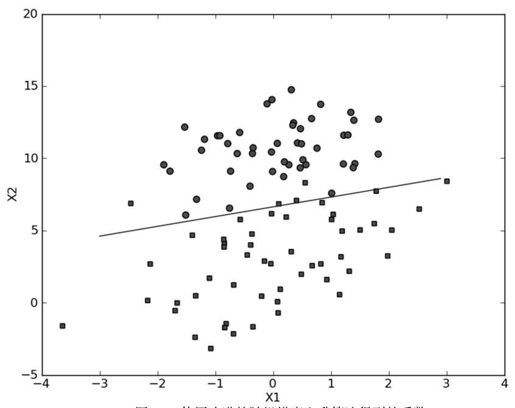
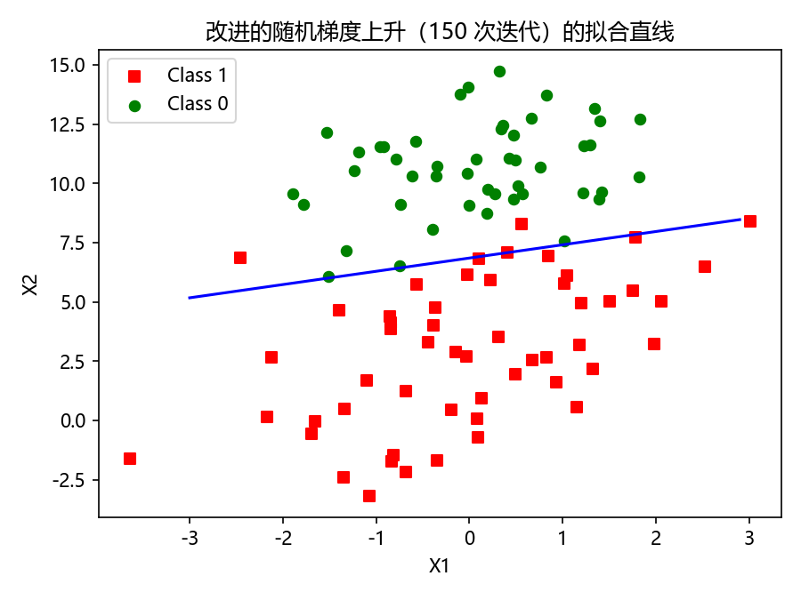
实跑记录两组系数供对照（随机性导致与书及彼此不完全一致，量级稳定）：默认 150 次迭代得 \([13.26,\ 1.08,\ -1.94]\)，改 500 次迭代得 \([13.91,\ 0.87,\ -1.88]\)。默认迭代次数是 150，可以通过 stocGradAscent1() 的第 3 个参数来修改。
目前我们已经学习了几个优化算法，但还有很多优化算法值得探讨，所幸这方面已有大量的文献可供参考。另外再说明一下：针对给定的数据集，读者完全可以对算法的各种参数进行调整，从而达到更好的效果。
迄今为止我们分析了回归系数的变化情况，但还没有达到本章的最终目标——完成具体的分类任务。下一节使用随机梯度上升算法来解决病马的生死预测问题。
5.3 示例：从疝气病症预测病马的死亡率#
本节将使用 Logistic 回归来预测患有疝病的马的存活问题。这里的数据集包含 368 个样本和 28 个特征。作者并非育马专家，从文献中了解到：**疝病（colic）**是描述马胃肠痛的术语。然而这种病不一定源自马的胃肠问题，其他问题也可能引发马疝病。该数据集包含了医院检测马疝病的一些指标，有的指标比较主观，有的指标难以测量，例如马的疼痛级别。
数据集来源
数据来自 2010 年 1 月 11 日的 UCI 机器学习数据库（http://archive.ics.uci.edu/ml/datasets/Horse+Colic）。该数据最早由加拿大安大略省圭尔夫大学计算机系的 Mary McLeish 和 Matt Cecile 收集。
示例：使用 Logistic 回归估计马疝病的死亡率：
| 步骤 | 本例的做法 |
|---|---|
| (1) 收集数据 | 给定数据文件 |
| (2) 准备数据 | 用 Python 解析文本文件并填充缺失值 |
| (3) 分析数据 | 可视化并观察数据 |
| (4) 训练算法 | 使用优化算法，找到最佳的系数 |
| (5) 测试算法 | 观察错误率；根据错误率回退到训练阶段，改变迭代次数和步长等参数以得到更好的回归系数 |
| (6) 使用算法 | 实现一个简单的命令行程序来收集马的症状并输出预测结果（留给读者的一道习题） |
另外需要说明：除了部分指标主观和难以测量外，该数据还存在一个大问题——数据集中有 30% 的值是缺失的。下面先介绍如何处理数据中的缺失问题，然后再利用 Logistic 回归和随机梯度上升算法来预测病马的生死。
5.3.1 准备数据：处理数据中的缺失值#
数据中的缺失值是个非常棘手的问题，有很多文献都致力于解决它。数据缺失究竟带来了什么问题？假设有 100 个样本和 20 个特征，这些数据都是机器收集回来的。若机器上的某个传感器损坏导致一个特征无效时该怎么办？此时是否要扔掉整个数据？另外 19 个特征怎么办？它们是否还可用？答案是肯定的——有时候数据相当昂贵，扔掉和重新获取都不可取，所以必须采用一些方法来解决这个问题。
可选的做法有：
- 使用可用特征的均值来填补缺失值；
- 使用特殊值来填补缺失值，如 -1；
- 忽略有缺失值的样本；
- 使用相似样本的均值添补缺失值；
- 使用另外的机器学习算法预测缺失值。
现在对要用的数据集进行预处理，使其可以顺利地使用分类算法。预处理阶段需要做两件事：
第一，所有的缺失值必须用一个实数值来替换——因为我们使用的 NumPy 数据类型不允许包含缺失值。这里选择实数 0 来替换所有缺失值，恰好能适用于 Logistic 回归。这样做的直觉在于：我们需要的是一个在更新时不会影响系数的值。回归系数的更新公式如下：
如果 dataMatrix 的某特征对应值为 0，那么按分量看，该特征的系数将不做更新——因为更新量里的这一项 \(\alpha \cdot error \cdot x_j\) 中 \(x_j = 0\)，乘积直接归零。另外，由于 \(\sigma(0) = 0.5\)，即它对结果的预测不具有任何倾向性，因此上述做法也不会对误差项造成任何影响。基于上述原因，将缺失值用 0 代替既可以保留现有数据，也不需要对优化算法进行修改。此外，该数据集中的特征取值一般不为 0，因此在某种意义上说它也满足"特殊值"这个要求。
第二，如果在测试数据集中发现一条数据的类别标签已经缺失，那么简单的做法是将该条数据丢弃。这是因为类别标签与特征不同，很难确定采用某个合适的值来替换。采用 Logistic 回归进行分类时这种做法是合理的，而如果采用类似 kNN 的方法就可能不太可行。
拓展：填 0 只对'乘系数再求和'的模型免费
"缺失值填 0 不影响模型"并不是普适结论——它对 Logistic 回归这类线性加权模型成立（0 乘任何系数都归零、且 \(\sigma(0)=0.5\) 无倾向）。换成 kNN 就不行了：kNN 依赖距离计算，把缺失填成 0 会人为把该维的距离拉近，等于偷偷改了几何关系。选择哪种填补方式必须结合下游算法的数学性质，这正是原书说"没有标准答案，取决于实际应用"的含义。
原始数据集经过预处理之后保存成两个文件：horseColicTest.txt 和 horseColicTraining.txt。如果想对原始数据和预处理后的数据做个比较，可以在 http://archive.ics.uci.edu/ml/datasets/Horse+Colic 浏览这些数据。实跑核对：预处理后的两个文件分别有 299 行（训练）和 67 行（测试），每行 22 个制表符分隔的字段（21 个特征 + 1 个类别标签）。
现在我们有了一个"干净"可用的数据集和一个不错的优化算法，下面把这些部分融合在一起训练出一个分类器，来预测病马的生死问题。
5.3.2 测试算法：用 Logistic回归进行分类#
本章前面几节介绍了优化算法，但还没有在分类上做任何实际尝试。使用 Logistic 回归进行分类并不需要做很多工作：把测试集上每个特征向量乘以最优化方法得来的回归系数，将该乘积结果求和，最后输入到 Sigmoid 函数中。如果对应的 Sigmoid 值大于 0.5 就预测类别标签为 1，否则为 0。
下面看看实际运行效果，打开文本编辑器并将下列代码添加到 logRegres.py 文件中：
# ===== 书 5.3.2 节 程序清单5-5：Logistic回归分类函数 =====
def classifyVector(inX, weights):
prob = sigmoid(sum(inX * weights)) # 特征向量 × 系数求和，代入 Sigmoid
if prob > 0.5: return 1.0 # 大于 0.5 判 1（存活），否则判 0
else: return 0.0
def colicTest():
frTrain = open('horseColicTraining.txt') # 训练集与测试集分别打开
frTest = open('horseColicTest.txt')
trainingSet = []; trainingLabels = []
for line in frTrain.readlines():
currLine = line.strip().split('\t') # 该数据集以制表符分隔
lineArr = []
for i in range(21): # 前 21 列是特征
lineArr.append(float(currLine[i]))
trainingSet.append(lineArr)
trainingLabels.append(float(currLine[21])) # 第 22 列是类别标签
trainWeights = stocGradAscent1(array(trainingSet), trainingLabels, 500) # 500 次迭代训练
errorCount = 0; numTestVec = 0.0
for line in frTest.readlines():
numTestVec += 1.0
currLine = line.strip().split('\t')
lineArr = []
for i in range(21):
lineArr.append(float(currLine[i]))
if int(classifyVector(array(lineArr), trainWeights)) != int(currLine[21]):
errorCount += 1 # 预测类别与真实类别不一致即记一次错
errorRate = (float(errorCount) / numTestVec)
print("the error rate of this test is: %f" % errorRate)
return errorRate
def multiTest():
numTests = 10; errorSum = 0.0
for k in range(numTests): # 调用 colicTest() 10 次并求平均
errorSum += colicTest()
print("after %d iterations the average error rate is: %f"
% (numTests, errorSum / float(numTests)))
运行环境
本节代码要从数据文件读数据，文件名一律写相对路径（如 'horseColicTraining.txt'）。运行时工作目录需在数据文件所在目录（本站配套数据位于 _ml_data\Ch05\，内含 testSet.txt、horseColicTraining.txt、horseColicTest.txt）。拿不准时先 import os; print(os.getcwd()) 检查。
程序清单 5-5 的第一个函数是 classifyVector()，它以回归系数和特征向量作为输入来计算对应的 Sigmoid 值：如果 Sigmoid 值大于 0.5 函数返回 1，否则返回 0。
接下来的函数是 colicTest()，用于打开测试集和训练集并对数据做格式化处理。该函数首先导入训练集——同前面一样，数据的最后一列仍然是类别标签。数据最初有三个类别标签，分别代表马的三种情况："仍存活"、"已经死亡"和"已经安乐死"。为方便起见，这里将"已经死亡"和"已经安乐死"合并成"未能存活"这个标签。数据导入之后，便可以使用 stocGradAscent1() 来计算回归系数向量。这里可以自由设定迭代次数——例如在训练集上使用 500 次迭代，实验结果表明这比默认迭代 150 次的效果更好。系数计算完成之后，导入测试集并计算分类错误率。
整体看来，colicTest() 具有完全独立的功能，多次运行得到的结果可能稍有不同，这是因为其中有随机的成分（stocGradAscent1() 的随机选样）。如果在 stocGradAscent1() 函数中回归系数已经完全收敛，那么结果才将是确定的。最后一个函数是 multiTest()，其功能是调用 colicTest() 10 次并求结果的平均值。
在 Python 提示符下输入 multiTest()，实跑输出如下：
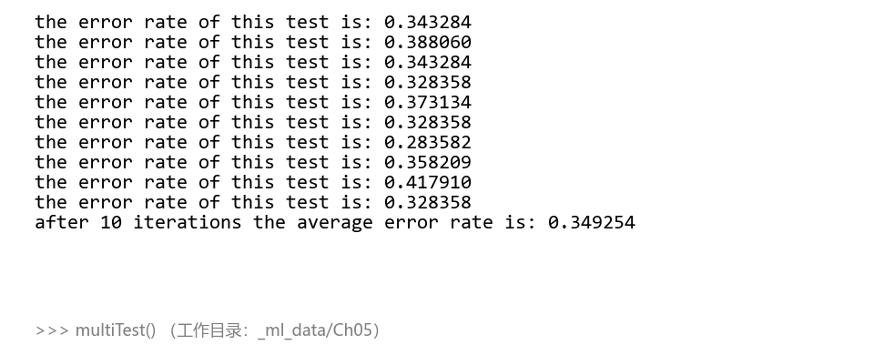
从上面的结果可以看到，10 次迭代之后的平均错误率约 35%（实跑 0.349254，单次在 0.284~0.418 之间波动——随机成分所致，与书报告的 35% 一致）。事实上这个结果并不差，因为有 30% 的数据缺失。当然，如果调整 colicTest() 中的迭代次数和 stocGradAscent1() 中的步长，平均错误率可以降到 20% 左右。第 7 章中我们还会再次使用到这个数据集。
5.4 本章小结#
Logistic 回归的目的是寻找一个非线性函数 Sigmoid 的最佳拟合参数，求解过程可以由最优化算法来完成。在最优化算法中，最常用的就是梯度上升算法，而梯度上升算法又可以简化为随机梯度上升算法。
- 随机梯度上升算法与梯度上升算法的效果相当，但占用更少的计算资源；
- 随机梯度上升是一个在线算法：可以在新数据到来时就完成参数更新，而不需要重新读取整个数据集来进行批处理运算；
- 机器学习的一个重要问题是如何处理缺失数据——这个问题没有标准答案，取决于实际应用中的需求，现有一些解决方案各有优缺点。
下一章将介绍与 Logistic 回归类似的另一种分类算法：支持向量机，它被认为是目前最好的现成算法之一。
坑与陷阱#
8 个容易踩的坑
mat()在 NumPy 2.x 已被移除：原书的mat(dataMatIn)直接照抄会报AttributeError: np.mat was removed in the NumPy 2.0 release。改用asmatrix()；更彻底的做法是全程 ndarray（matrix 类型本身也在弃用路上）。- sigmoid 大数值上溢：
exp(-inX)在 inX 为大负数时可能触发RuntimeWarning: overflow encountered in exp。此时结果会饱和到 0 或 1，分类一般不受影响，但要知道警告从哪来。数值稳定写法：if inX >= 0: return 1/(1+exp(-inX))，否则return exp(inX)/(1+exp(inX))——两个分支里指数恒为负数，永不溢出。 - Python 3 里
del(dataIndex[randIndex])会报错：range(m)返回的是不可变序列，不支持删除。程序清单 5-4 必须写成dataIndex = list(range(m))——这是原书 Python 2 代码最隐蔽的一处改写点。 reload不是 Python 3 内置：原书反复用reload(logRegres)刷新模块，Python 3 需from importlib import reload；脚本式开发直接重跑即可。- 两种数据的分隔符不同：testSet.txt 是空格分隔（
split()即可），病马数据是制表符分隔（必须split('\t')）。分隔符用错，float()当场抛 ValueError。 - 相对路径按当前工作目录解析：代码里只写了文件名，工作目录不在数据所在处就 FileNotFoundError。先
os.getcwd()确认（见 5.3.2 的"运行环境"注）。 - 随机算法的结果每次都不同：
stocGradAscent1()和colicTest()含随机选样，单次错误率在 0.28~0.42 间波动是正常现象。报告性能用multiTest()的 10 次平均；想复现实验可固定随机种子（如numpy.random.seed(2)）。 - matrix 与 ndarray 的运算语义不同：
*在 matrix 上是矩阵乘法、在 ndarray 上是逐元素乘；h 是 100×1 的列向量而不是数。混淆两者"执行结果将与预期截然不同"（原书原话），用错时先type()检查手里的变量到底是哪种。
速览#
- Logistic 回归：特征乘回归系数求和得 \(z = w^{T}x\)，代入 Sigmoid \(\sigma(z) = 1/(1+e^{-z})\) 压到 0~1，大于 0.5 判 1 类、小于判 0 类；也可看成概率估计。优点：计算代价不高、易理解易实现；缺点：易欠拟合、精度可能不高；适用数值型和标称型数据。
- 海维塞德阶跃函数能输出 0/1 但瞬间跳跃难处理；Sigmoid 性质类似且数学上更易处理：\(z=0\) 时值 0.5，\(z \to \pm\infty\) 分别趋于 1、0，横轴刻度足够大时形似阶跃函数。
- 梯度上升：沿梯度方向迭代找最大值，\(w := w + \alpha\nabla_w f(w)\)；梯度下降把加号变减号、求最小值；步长 \(\alpha\) 是移动量，停止条件为迭代次数或误差范围。
- gradAscent：步长 0.001、迭代 500 次、全数据集矩阵运算（每次迭代含 300 次乘法）；testSet 上实跑系数
[4.12414349, 0.48007329, -0.6168482]，与书逐位一致，训练集错分 4/100。 - 决策边界：令 Sigmoid 输入为 0，即 \(0 = w_0x_0 + w_1x_1 + w_2x_2\)，解出 \(x_2 = (-w_0 - w_1x_1)/w_2\) 画直线；传参用
weights.getA()把 matrix 转 ndarray。 - 随机梯度上升：一次仅用一个样本更新系数，是在线学习算法（对应批处理）；单轮遍历系数
[1.01702007, 0.85914348, -0.36579921]（确定性），错分约 ⅓，拟合欠佳。 - 改进两点：alpha 动态衰减
4/(1.0+j+i)+0.0001（永不为 0、j ≪ max(i) 时非严格下降）+ 随机选样更新（消除周期波动）；默认迭代 150 次，收敛比固定 alpha 快得多。 - 病马实例：368 样本、28 特征、30% 缺失；缺失特征填 0（不更新系数、\(\sigma(0)=0.5\) 无倾向、保留数据不改算法），测试集标签缺失的样本丢弃；预处理后训练 299 行 / 测试 67 行。
- 分类的落地就一步：
classifyVector把特征向量乘系数求和代入 Sigmoid，大于 0.5 判 1；训练用stocGradAscent1(…, 500)（500 次优于默认 150 次）。 - multiTest() 跑 10 次取平均：实跑平均错误率 0.349254 ≈ 35%（书 35%；30% 数据缺失下并不差），调迭代次数与步长可降到 20% 左右；该数据集第 7 章再用。
术语速查#
| 英文 | 中文 | 一句话 |
|---|---|---|
| Logistic regression | Logistic 回归（对数几率回归） | 特征线性加权后过 Sigmoid，按 0.5 分类的二分类器 |
| Sigmoid function | Sigmoid 函数 | \(\sigma(z)=1/(1+e^{-z})\)，把任意实数压到 0~1 |
| Heaviside step function | 海维塞德阶跃函数 | 单位阶跃函数，输出 0/1 但跳跃点难处理，被 Sigmoid 取代 |
| regression coefficient | 回归系数 | weight 的本书译法（与第 8 章"权重"区分），要找的最佳参数 |
| best fitting line | 最佳拟合直线 | 拟合出的分隔线，"回归"一词的来源 |
| decision boundary | 决策边界 | 令 Sigmoid 输入为 0 解出的分隔直线 |
| optimization algorithm | 最优化算法 | 迭代寻找函数最大/最小值的方法总称 |
| gradient (∇) | 梯度 | 函数值增长最快的方向，各偏导数组成的向量 |
| gradient ascent / descent | 梯度上升 / 下降 | 加梯度求最大值 / 减梯度求最小值 |
| step size (α) | 步长 | 每次沿梯度移动的量，现代称学习率 |
| iteration / maxCycles | 迭代次数 | 重复执行更新公式的次数，本章 500 或 150 |
| batch processing | 批处理 | 一次处理所有数据再更新（梯度上升的方式） |
| online learning | 在线学习 | 新样本到来即可增量更新，随机梯度上升的特性 |
| stochastic gradient ascent | 随机梯度上升 | 一次仅用一个样本更新回归系数 |
| incremental update | 增量式更新 | 只用新样本微调参数而不重训全部数据 |
| convergence | 收敛 | 参数达到稳定值不再变化，判断优化算法可靠的依据 |
| maximum likelihood | 最大似然 | 本书更新公式实际在最大化的目标（见拓展推导） |
| missing value | 缺失值 | 数据采集失败留下的空洞，本章数据缺 30% |
| imputation | 缺失值填补 | 均值 / 特殊值 / 忽略 / 相似样本 / 算法预测五种做法 |
| colic | 疝病 | 描述马胃肠痛的术语，不一定源自胃肠问题 |
| UCI Machine Learning Repository | UCI 机器学习数据库 | 病马数据集的来源 |
| error rate | 错误率 | 错分次数 ÷ 测试总数，量化分类效果 |
| matrix vs ndarray | 矩阵与数组 | NumPy 两种类型：* 分别是矩阵乘与逐元素乘，混用必炸 |
| getA() | 矩阵转数组 | matrix → ndarray 的方法，numpy 2.x 仍可用 |
| underfitting | 欠拟合 | Logistic 回归的已知缺点：模型太简单、精度可能不高 |